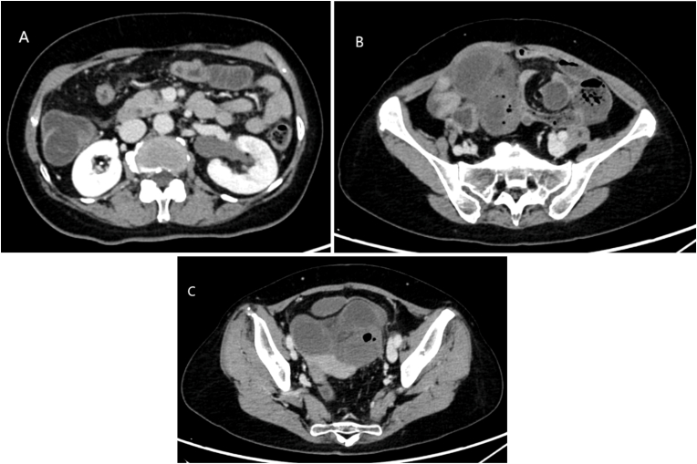
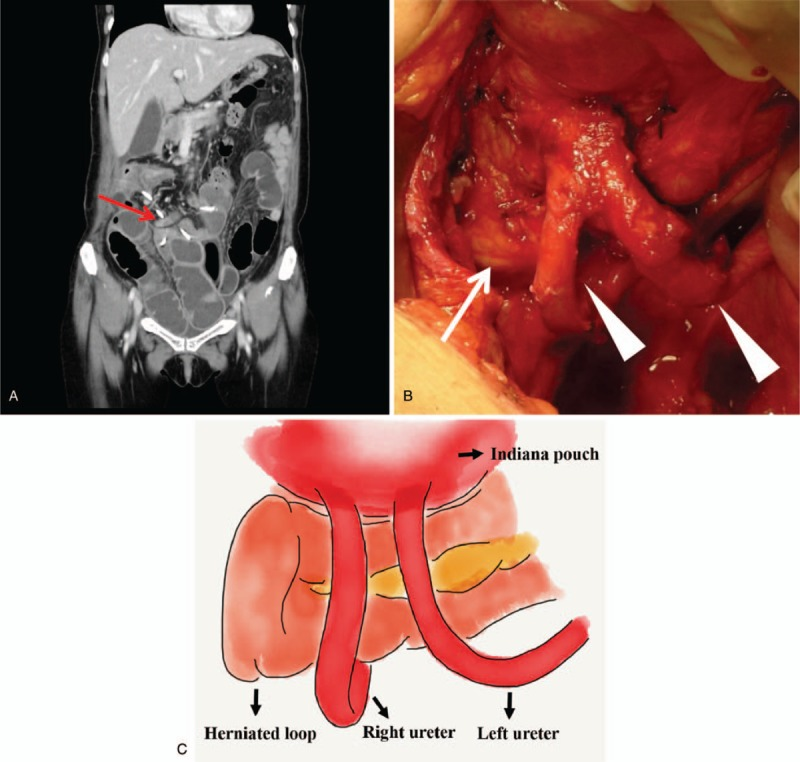
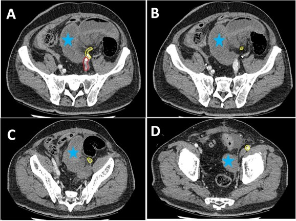

3063 — Thoát vị nội và thoát vị cạnh lỗ thông sau chuyển lưu nước tiểu ở trẻ / Internal and parastomal hernia after urinary diversion in children
Tags: pattern:thoat-vi-noi pattern:thoat-vi-canh-lo-thong pattern:tac-ruot-non pattern:xoan-ruot pattern:u-nuoc-than vung:tiet-nieu vung:tieu-khung vung:o-bung anatomy:phuc-mac-tieu-khung protocol:CT-bung-chau protocol:noi-soi-o-bung protocol:phau-thuat
Mức chắc chắn (certainty): tổng hợp y văn (literature synthesis) — ghép ca thoát vị nội quanh niệu quản sau cấy ghép lại niệu quản + tổng quan 15 ca từ 1981 (Urol Case Rep 2026, PMC13400766), 2 ca thoát vị nội khoảng giữa hai niệu quản sau chuyển lưu (Medicine 2019, PMC6799691), ca thoát vị nội dưới động mạch chậu ngoài (J Surg Case Rep 2023, PMC10024612), ca thoát vị nội giữa niệu quản và cân ngang (J Surg Case Rep 2024, PMC10958610), loạt 31 trẻ có kênh tiểu tự CIC (Mitrofanoff) (Pediatr Surg Int 2025, PMC12474596), tổng quan hệ thống thoát vị cạnh lỗ thông sau cắt bàng quang robot (J Robot Surg 2026, PMC13269518) và tổng quan về thoát vị cạnh lỗ thông sau ileal conduit (Urol Clin North Am 2026, PMID 42823049). Không có ca do nhóm tự chụp.
Câu hỏi thực hành: bé trai 9 tuổi, bàng quang thần kinh, đã tăng dung tích bàng quang + Mitrofanoff cách đây 4 năm, vào viện vì đau bụng từng cơn + nôn + bí trung tiện 18 giờ; bụng chướng, không sốt, siêu âm thấy ứ nước thận trái nhẹ. Câu hỏi: đây là tắc ruột do dính, hay thoát vị nội — và có phải mổ ngay không? Bài chốt ba quyết định: (1) ở trẻ đã chuyển lưu nước tiểu, tắc ruột non phải được đọc là "thoát vị nội cho tới khi chứng minh ngược" — dính chỉ là chẩn đoán loại trừ; (2) CT bụng–chậu có cản quang là chuẩn, tìm lỗ thoát vị + quai kín + dấu xoáy, và luôn đo niệu quản/thận vì thoát vị có thể chèn niệu quản; (3) dấu hoại tử ruột hoặc chèn niệu quản = mổ cấp, không chờ; thoát vị cạnh lỗ thông không biến chứng thì theo dõi. Nối 3009 – Dò bàng quang–ruột sau tăng dung tích bàng quang, 3001 – Hẹp lỗ thông Mitrofanoff, 3010 – Hẹp miệng nối niệu quản–bàng quang, 672 – Biến chứng muộn sau tái tạo bàng quang bằng ruột.
1. Tổng quan bệnh học – cơ chế hình ảnh: vì sao chuyển lưu nước tiểu tạo ra lỗ thoát vị
- Định nghĩa: thoát vị nội (internal hernia) là quai ruột chui qua lỗ bẩm sinh hoặc mắc phải trong phúc mạc/mạc treo vào một khoang giải phẫu bất thường, gây tắc và/hoặc thiếu máu ruột. Thoát vị cạnh lỗ thông (parastomal hernia) là quai ruột chui qua khiếm khuyết cân quanh lỗ thông da (Mitrofanoff, ileal conduit, ureterocutaneostomy).
- Vì sao phẫu thuật tiết niệu tạo lỗ thoát vị: khi niệu quản được đưa vào ổ phúc mạc (cấy ghép lại xuyên phúc mạc, chuyển lưu qua ổ bụng), niệu quản trở thành một "dây" bắc qua tiểu khung; khoảng giữa niệu quản – bàng quang – phúc mạc bên – cơ thắt lưng trở thành lỗ thoát vị thật (paraureteral space). Tương tự, mạc treo ống dẫn lưu và lỗ mở cân cho lỗ thông da tạo ra khiếm khuyết cố định mà ruột có thể chui qua.
- Tần suất và mức nguy hiểm (số liệu định lượng): thoát vị nội gặp 0,2–0,5% dân số và chiếm 1–3% các ca tắc ruột cơ học; hơn 50% thoát vị nội hiện nay là mắc phải sau mổ, chủ yếu sau mổ tiểu khung và sau phúc mạc. Tỷ lệ hoại tử ruột 30–50%, và can thiệp muộn làm tử vong vượt 20% (PMC13400766).
- Bằng chứng sau cấy ghép lại niệu quản: từ 1981 y văn ghi 15 ca tắc ruột do thoát vị nội sau cấy ghép lại niệu quản; 12 ca được chụp CT trước mổ, trong đó 8 ca (67%) CT thấy giãn bể thận/niệu quản — tức chèn niệu quản là dấu hiệu đi kèm thường gặp, không phải biến chứng hiếm (PMC13400766).
- TẠI SAO CT là chuẩn vàng: lỗ thoát vị là khiếm khuyết cân/mạc treo — chỉ thấy khi bơm cản quang đủ và cắt lớp mỏng đa bình diện. Ba dấu hiệu cốt lõi: (a) quai kín (closed loop) — hai điểm tắc trên cùng một quai; (b) dấu xoáy (whirl sign) — mạc treo và mạch xoắn quanh trục; (c) dấu mỏ chim (beak sign) — quai ruột vuốt nhọn tại lỗ thoát vị. Kèm giảm ngấm thành ruột, phù mạc treo, dịch tự do = dấu thiếu máu, chỉ định mổ cấp.
- TẠI SAO thoát vị nội lại chèn niệu quản: niệu quản là cấu trúc cố định chạy trong tiểu khung; khi quai ruột chui vào khoang quanh niệu quản và căng lên, niệu quản bị kéo/gập → ứ nước trên chỗ gập. Vì vậy ứ nước một bên ở trẻ đã cấy ghép lại niệu quản + đau bụng cấp phải đọc là thoát vị nội, không phải "hẹp miệng nối" (bài 3010).
- TẠI SAO trẻ khác người lớn: thành bụng mỏng, áp lực ổ bụng tăng do táo bón mạn và co cứng cơ ở bệnh nhi bàng quang thần kinh, suy dinh dưỡng (thiếu mỡ che lỗ thoát vị), và nhiều lần mổ bụng — tất cả làm lỗ thoát vị dễ mở và khó chẩn đoán vì lượng mỡ ít, dấu hiệu trên CT kém rõ.
- Tần suất thoát vị cạnh lỗ thông: sau ileal conduit, thoát vị cạnh lỗ thông gặp tới 30%, 1/3 có triệu chứng, và 15% phải mổ (Urol Clin North Am 2026, PMID 42823049). Ở trẻ có kênh tiểu tự CIC (Mitrofanoff), loạt 31 trẻ ghi 7 rối loạn kênh ở 6 trẻ (từ 1 tháng đến 9 năm), trong đó 1 thoát vị cạnh lỗ thông; xử trí 2 bảo tồn, 2 nội soi, 3 mổ mở (PMC12474596) — tức biến cố hiếm nhưng có thật, và không phải mọi thoát vị cạnh lỗ thông đều phải mổ.
2. Mẫu hình + chẩn đoán phân biệt theo VỊ TRÍ lỗ thoát vị (Gamut)
- Theo vị trí (quyết định đường mổ và nguy cơ chèn niệu quản):
- Quanh niệu quản (paraureteral): giữa niệu quản – bàng quang – phúc mạc bên/cơ thắt lưng; hay sau cấy ghép lại niệu quản xuyên phúc mạc; chèn niệu quản → ứ nước.
- Giữa hai niệu quản (interureteric): sau chuyển lưu khi hai niệu quản bắt chéo tạo hình chữ U; quai ruột chui vào giữa.
- Dưới động mạch chậu ngoài (beneath EIA): sau vét hạch tiểu khung/chuyển lưu; nguy cơ xoắn và hoại tử cao vì lỗ hẹp.
- Qua mạc treo ống dẫn lưu / lỗ mở cân: thoát vị cạnh lỗ thông hoặc qua khiếm khuyết mạc treo của đoạn ruột làm ống dẫn lưu.
- Khoang Petersen và các khoang sau mổ khác: sau mổ tiểu khung rộng.
- Theo thời điểm: sớm ≤ 30 ngày (phù nề, chưa dính — lỗ thoát vị còn mở), muộn > 30 ngày (dính co kéo tạo lỗ cố định; thường tháng đến năm sau mổ).
- Mnemonic "HERNIA": Hernia qua lỗ mạc treo/ổ phúc mạc, Extra-ureteric (quanh niệu quản), Retro-ureteric (sau niệu quản), Narrow orifice (nguy cơ hoại tử), Interureteric (giữa hai niệu quản), Acquired post-op (> 50%).
- Phân biệt với "tắc ruột do dính" — nguyên tắc: dính không có lỗ thoát vị trên CT; nếu thấy quai kín + lỗ thoát vị + dấu xoáy, chẩn đoán là thoát vị nội và mổ sớm hơn, vì dính ít khi gây hoại tử nhanh như thoát vị nội.
3. Bảng so sánh phân biệt (ma trận đối chiếu)
| Thực thể (entity) | Hình ảnh điển hình | Chốt vào (rule-in) | Chốt loại (rule-out) | Gợi ý xác nhận |
|---|---|---|---|---|
| Thoát vị nội quanh niệu quản | CT: quai ruột chui qua khoảng giữa niệu quản và thành chậu, dấu xoáy, quai kín, ứ nước–niệu quản cùng bên | Lỗ thoát vị thấy được + quai kín + ứ nước một bên | Chỉ có giãn ruột lan tỏa, không lỗ thoát vị → dính/liệt ruột | CT bụng–chậu có cản quang, vành + đứng |
| Thoát vị nội giữa hai niệu quản | CT vành: quai ruột nằm giữa hai niệu quản hình chữ U, hai niệu quản bắt chéo phía trên | Hai niệu quản tạo thành vòng + quai ruột nằm trong vòng | Một niệu quản đơn thuần bị đẩy lệch → không phải | CT vành; dựng 3D đường niệu quản |
| Thoát vị nội dưới động mạch chậu ngoài | CT trục: quai ruột kẹt giữa ĐM chậu ngoài và thành chậu, mạch bị đè, ruột giảm ngấm | ĐM chậu ngoài là bờ trên của lỗ thoát vị + dấu thiếu máu | Ruột nằm cạnh mạch nhưng không kẹt → không phải | CTA/CT có cản quang; mổ nội soi thăm dò |
| Thoát vị cạnh lỗ thông (Mitrofanoff/ileal conduit) | CT: khiếm khuyết cân quanh lỗ thông, quai ruột dưới da cạnh lỗ thông, có thể hẹp lòng ống dẫn lưu | Lỗ thông + khối dưới da cạnh lỗ + khiếm khuyết cân đo được | Chỉ sa niêm mạc/hẹp lỗ thông không có quai ruột → không phải thoát vị | Khám + CT; siêu âm khi mang thai/trẻ nhỏ |
| Hẹp lỗ thông Mitrofanoff (bài 3001) | Không có quai ruột; lỗ thông hẹp, đặt catheter khó, bể chứa căng | Đặt catheter thất bại + không có khối cạnh lỗ | Có khối cạnh lỗ thông + quai ruột → thoát vị | Soi lỗ thông; CT nếu nghi |
| Tắc ruột do dính | Nhiều dải dính, chuyển tiếp rõ, không lỗ thoát vị, không quai kín | Tiền sử mổ + chuyển tiếp + không lỗ thoát vị | Có lỗ thoát vị/quai kín/xoáy → thoát vị nội | CT; theo dõi đáp ứng điều trị bảo tồn |
| Ứ nước do hẹp miệng nối niệu quản (bài 3010) | Hẹp khu trú tại miệng nối, niệu quản trên giãn, không quai ruột bất thường | Hẹp tại chỗ nối + không có lỗ thoát vị | Ứ nước + đau bụng cấp + lỗ thoát vị → thoát vị nội | CT/MR urography; Whitaker nếu cần |

*Bệnh nhân 64 tuổi (bối cảnh người lớn), 15 giờ đau bụng + bí trung tiện, sau cấy ghép lại niệu quản trái. (A) ứ nước–niệu quản trái; (B) lỗ thoát vị (hernia orifice) với quai ruột chui qua; (C) quai ruột bị tắc, giãn trong tiểu khung, bàng quang bị chèn. Bài học áp dụng cho trẻ: ứ nước một bên + đau bụng cấp sau cấy ghép lại niệu quản = đọc lỗ thoát vị, không đọc "hẹp miệng nối". Nguồn: Urol Case Rep 2026 (PMC13400766), CC BY-NC-ND 4.0, nguyên bản, không crop/ghép.*4. Protocol chụp + phân tầng xử trí
- CT bụng–chậu có cản quang tĩnh mạch (portal venous), lát ≤ 1–2 mm, dựng vành + đứng: đây là chuẩn; chụp không cản quang trước để loại trừ sỏi/máu tụ. Cửa sổ mềm + cửa sổ mạch. Không dùng X-quang bụng đứng để loại trừ thoát vị nội (chỉ thấy mức khí–dịch, không thấy lỗ thoát vị).
- Đọc theo 5 bước: (1) tìm lỗ thoát vị (khiếm khuyết cân/mạc treo); (2) quai kín — hai điểm tắc; (3) dấu xoáy + mạch mạc treo căng; (4) dấu thiếu máu — thành ruột giảm ngấm, phù mạc treo, dịch tự do, khí trong thành (pneumatosis); (5) đường niệu quản/thận — ứ nước, vị trí niệu quản bị chèn.
- Phân tầng xử trí:
- Có dấu thiếu máu/hoại tử, hoặc chèn niệu quản có ứ nước tiến triển → mổ cấp (nội soi ổ bụng nếu không chướng quá mức; mở bụng nếu nghi hoại tử diện rộng). Kinh nghiệm y văn: 12 ca được chẩn đoán trước mổ bằng CT, nhưng vẫn có ca niệu quản bị cắt nhầm vì tưởng là dải dính (PMC13400766) — phải xác định niệu quản trước khi cắt bất kỳ "dải" nào.
- Không có dấu thiếu máu, tắc không hoàn toàn → có thể theo dõi 24–48 giờ với sonde dạ dày + dịch truyền, nhưng phải chụp lại nếu không cải thiện.
- Sau khi giải phóng: đóng lỗ thoát vị/khiếm khuyết phúc mạc, phúc mạc hóa đường đi niệu quản hoặc treo niệu quản vào thành chậu; có ca dùng mạc nối phủ lên niệu quản để chặn tái phát (PMC13400766).
- Thoát vị cạnh lỗ thông: không biến chứng → theo dõi (đo kích thước, hướng dẫn CIC đúng); có tắc/hẹp lỗ thông/tắc ruột → mổ: sửa lỗ thông + đóng cân, có thể đặt lưới (bằng chứng ở trẻ còn yếu); dự phòng bằng lưới sau cắt bàng quang còn tranh cãi (PMC13269518).
- Theo dõi sau mổ: đánh giá dung tích bể chứa, đặt catheter, siêu âm thận và tầm soát tắc ruột tái phát — tái phát thoát vị nội có thể xảy ra nếu không đóng lỗ thoát vị.
flowchart TD
A[Đau bụng + nôn + bí trung tiện ở trẻ đã chuyển lưu nước tiểu] --> B[X-quang bụng: mức khí-dịch]
B --> C[CT bụng-chậu có cản quang: lát mỏng, vành + đứng]
C --> D{Có lỗ thoát vị/quai kín/xoáy?}
D -->|Không| E[Tắc ruột do dính: điều trị bảo tồn + chụp lại nếu không cải thiện]
D -->|Có| F{Dấu thiếu máu hoặc ứ nước tiến triển?}
F -->|Có| G[Mổ CẤP: giải phóng quai + đóng lỗ thoát vị + kiểm tra niệu quản]
F -->|Không| H[Theo dõi 24-48 giờ: sonde dạ dày + dịch]
H --> I{Cải thiện?}
I -->|Không| G
I -->|Có| J[Theo dõi + hẹn chụp lại; tư vấn dấu hiệu tái phát]
G --> K[Phúc mạc hóa/treo niệu quản + đóng khiếm khuyết]
5. Biến thể bình thường và cạm bẫy
- Cạm bẫy chết người: cắt nhầm niệu quản vì tưởng là "dải dính". Niệu quản sau cấy ghép đi trong ổ phúc mạc và trông giống dải xơ khi bị quai ruột chèn; y văn ghi nhận nhiều ca niệu quản bị cắt rồi phải nối lại (PMC13400766). Luôn xác định niệu quản bằng stent/ICG/đường đi giải phẫu trước khi cắt.
- "Thoát vị tự hồi phục" trên CT: nếu CT chụp lúc quai ruột đã tự tụt, không thấy lỗ thoát vị → âm tính giả. Nếu lâm sàng điển hình, chụp lại hoặc nội soi thăm dò.
- Dấu hiệu kém rõ ở trẻ gầy: ít mỡ làm mất các mốc mỡ trên CT; giảm ngấm thành ruột khó đánh giá vì trẻ nhỏ có thể tích tuần hoàn nhỏ — đối chiếu lactate, toan chuyển hóa, đau khu trú.
- Ứ nước sau cấy ghép lại niệu quản có thể do trào ngược, không chỉ do tắc — đừng quy mọi ứ nước cho hẹp miệng nối (bài 3010); nếu ứ nước + đau bụng cấp, nghĩ chèn niệu quản do thoát vị.
- Hẹp lỗ thông ≠ thoát vị cạnh lỗ thông: cả hai gây đặt catheter khó, nhưng hẹp lỗ thông không có khối cạnh lỗ và không có quai ruột; điều trị khác nhau (nong/mổ tạo hình lỗ thông vs sửa cân).
- Satisfaction of search: thấy sỏi/sỏi thận hoặc nhiễm trùng tiểu rồi dừng — ở trẻ chuyển lưu, tắc ruột là nguyên nhân đau bụng riêng, phải đọc ruột trên cùng CT.
- Thoát vị cạnh lỗ thông "không triệu chứng" không cần mổ — mổ dự phòng ở trẻ có nguy cơ nhiễm mảnh ghép/lưới và chưa có bằng chứng (PMC13269518).
6. Tự lượng giá — Blind Quiz
Ca 1 — Trẻ 4 năm sau tăng dung tích bàng quang + Mitrofanoff, đau bụng + nôn.
- Gợi ý lâm sàng: đau bụng 15 giờ, bí trung tiện, tiền sử cấy ghép lại niệu quản; siêu âm ứ nước một bên.
- Câu hỏi: Tìm lỗ thoát vị ở đâu? Vì sao có ứ nước? Có phải mổ ngay không?
Bấm để hiện đáp án (findings + chẩn đoán)
- Dấu hiệu: (A) ứ nước–niệu quản trái; (B) lỗ thoát vị với quai ruột chui qua; (C) quai ruột tắc, giãn trong tiểu khung, chèn bàng quang.
- Chẩn đoán: thoát vị nội quanh niệu quản sau cấy ghép lại niệu quản — niệu quản bị chèn → ứ nước; ruột bị quai kín → tắc.
- Vì sao: niệu quản đi trong ổ phúc mạc tạo lỗ thoát vị thật giữa niệu quản, bàng quang và thành chậu.
- Xử trí: mổ cấp giải phóng quai + đóng lỗ thoát vị/phúc mạc hóa niệu quản; kiểm tra niệu quản trước khi cắt bất kỳ dải nào.
- Nguồn ảnh: Urol Case Rep 2026 (PMC13400766), CC BY-NC-ND 4.0, nguyên bản.
Ca 2 — Bệnh nhân sau chuyển lưu có bể chứa, đau bụng tái diễn.

- Gợi ý lâm sàng: đau bụng từng cơn, tiền sử chuyển lưu nước tiểu, không sốt.
- Câu hỏi: Quai ruột chui vào khoảng nào? Hai niệu quản tạo thành cấu trúc gì? Vì sao đây là "lỗ thoát vị" chứ không phải dính?
Bấm để hiện đáp án (findings + chẩn đoán)
- Dấu hiệu: (A) CT vành: quai ruột thoát vị nằm giữa hai niệu quản (mũi tên: quai thoát vị; đầu mũi tên: niệu quản); (B) mổ: quai ruột và dính giữa hai niệu quản; (C) sơ đồ: Indiana pouch, hai niệu quản hình chữ U, quai ruột thoát vị ở giữa.
- Chẩn đoán: thoát vị nội khoảng giữa hai niệu quản (interureteric internal hernia) sau chuyển lưu.
- Vì sao: hai niệu quản bắt chéo tạo vòng kín; khi lỗ mở cân phía trên cao, vòng này trở thành lỗ thoát vị.
- Nguồn ảnh: Medicine 2019 (PMC6799691), CC BY 4.0, nguyên bản.
Ca 3 — Đau bụng sau cắt bàng quang + chuyển lưu, CT có quai ruột giảm ngấm.

- Gợi ý lâm sàng: đau bụng + nôn sau mổ tiểu khung, lactate tăng nhẹ, không sốt.
- Câu hỏi: Bờ trên của lỗ thoát vị là gì? Dấu hiệu nào gợi ý thiếu máu ruột? Thái độ xử trí?
Bấm để hiện đáp án (findings + chẩn đoán)
- Dấu hiệu: chuỗi ảnh trục (A→D) cho thấy quai ruột (sao xanh) chui dưới động mạch chậu ngoài (đánh dấu vàng); mạch bị đè, ruột giãn, thành mỏng; có dịch tự do.
- Chẩn đoán: thoát vị nội dưới động mạch chậu ngoài — lỗ hẹp nên nguy cơ xoắn/hoại tử cao.
- Vì sao: ĐM chậu ngoài là bờ trên cố định của lỗ thoát vị; quai ruột kẹt giữa mạch và thành chậu.
- Xử trí: mổ cấp (nội soi hoặc mở), giải phóng + đánh giá sống ruột + đóng lỗ.
- Nguồn ảnh: J Surg Case Rep 2023 (PMC10024612), CC BY 4.0, nguyên bản.
Bài liên quan chéo
- 3009 – Dò bàng quang–ruột và dò bàng quang–da sau tăng dung tích bàng quang
- 3001 – Hẹp lỗ thông Mitrofanoff
- 3010 – Hẹp miệng nối niệu quản–bàng quang
- 672 – Biến chứng muộn sau tái tạo bàng quang bằng ruột
- 635 – Dị tật hệ tiết niệu nhi
Ảnh
images/3063_thoat-vi_CT_PMC13400766-F1.jpg— thoát vị nội sau cấy ghép lại niệu quản, CC BY-NC-ND 4.0.images/3063_thoat-vi_CT_PMC6799691-F1.jpg— thoát vị nội giữa hai niệu quản, CC BY 4.0.images/3063_thoat-vi_CT_PMC10024612-F2.jpg— thoát vị nội dưới ĐM chậu ngoài, CC BY 4.0.- Chi tiết nguồn + giấy phép từng ảnh:
images/CREDITS.md; danh sách bài gốc:sources.md.
Không dùng để chẩn đoán độc lập khi chưa có người hướng dẫn.